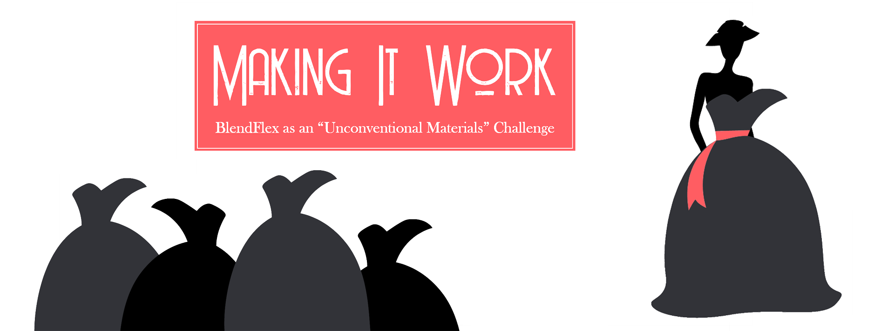

Need
Help faculty move beyond replicating a classroom over Zoom and make immediate, realistic course-design decisions for BlendFlex teaching.

What if faculty stopped treating BlendFlex as a delivery schedule—and started treating it as a design material?
During the rapid COVID-era transition, Nova Southeastern University’s Huizenga College faculty needed to teach students participating both through Zoom and outside scheduled sessions. This faculty-development webinar reframed that constraint as an “unconventional materials” challenge: begin with the whole learning experience, decide which activities belong in synchronous or asynchronous spaces, and build a purposeful sequence before, during, and after the live meeting. Presented to approximately 140 faculty, the session paired a memorable metaphor with a practical process instructors could use immediately while planning more substantial course improvements over time.
 Senior Instructional DesignerNova Southeastern University2020
Senior Instructional DesignerNova Southeastern University2020Help faculty move beyond replicating a classroom over Zoom and make immediate, realistic course-design decisions for BlendFlex teaching.
A visual framework for sorting learning activities across synchronous and asynchronous spaces, then sequencing them before, during, and after Zoom.
A college-wide webinar gave roughly 140 faculty a shared design vocabulary, a concrete audit-risk example, and practical questions for revising their courses.
The presentation translated instructional-design principles into an approachable metaphor at a moment when faculty needed usable guidance more than abstract models.
Constraints become more workable when they are treated as design choices. Faculty did not need to solve every course problem at once; they needed a way to make smaller improvements now while seeing the larger learning experience they could continue refining.
Methods & Tools: Faculty development · BlendFlex design · Synchronous and asynchronous learning · Learning-sequence design · Zoom